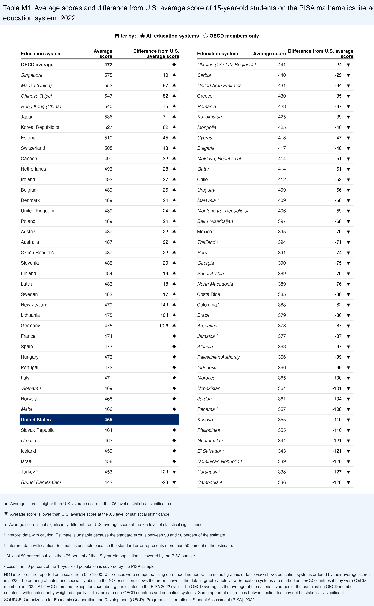

![A two-column table headed Table M1. Average scores and difference from U.S. average score of 15-year-old students on the PISA mathematics literacy scale, by education system: 2022. Rows run from Singapore at 575 down the left column to Brunei at 442, and from Ukraine at 441 down the right column to Cambodia at 336. Each row has a difference from the U.S. and an up, down or diamond symbol. The United States row, at 465, is highlighted in dark blue with a flag. Notes explain the symbols and footnotes underneath.](img/pisa-league-table-original.png)
Show the R code
sans <- c(intersect(c("Public Sans", "Helvetica", "Arial"),
systemfonts::system_fonts()$family), "sans")[1]
navy <- "#002868"; title_bg <- "#eef5fc"
# Layout in the original's own pixels (2224 x 3598), y measured from the top.
W <- 2224; H <- 3598
row_y <- function(i) 383 + (i - 1) * 62 # the 41 rows of each column
cols <- tibble(col = 1:2, name_x = c(124, 1172), score_x = c(668, 1700),
diff_x = c(1000, 2032), mark_x = c(1036, 2072))
# The OECD average leads the left column, then the 81 systems in order.
rows <- bind_rows(
tibble(system = "OECD average", oecd = 1, coverage_note = 0, caution = 0,
score = round(oecd_average), diff = NA, vs_us = "not different", bold = TRUE),
pisa |> transmute(system, oecd, coverage_note, caution, score = round(mean),
diff = if_else(code == "USA", NA, round(mean - us$mean)),
vs_us, bold = FALSE)) |>
mutate(slot = row_number(), col = if_else(slot <= 41, 1, 2),
i = if_else(col == 1, slot, slot - 41), y = H - row_y(i),
is_us = system == "United States",
label = paste0(system, case_when(coverage_note == 1 ~ " ¹",
coverage_note == 2 ~ " ²", TRUE ~ "")),
# the table prints a difference only where it is significant
diff_label = if_else(is.na(diff) | vs_us == "not different", "",
paste0(diff, c("", " !", " !!")[caution + 1]))) |>
left_join(cols, by = "col")
marks <- rows |> filter(!is_us) |>
mutate(shape = case_when(vs_us == "higher" ~ 24, vs_us == "lower" ~ 25, TRUE ~ 23))
notes <- c(
"▲ Average score is higher than U.S. average score at the .05 level of statistical significance.",
"▼ Average score is lower than U.S. average score at the .05 level of statistical significance.",
"◆ Average score is not significantly different from U.S. average score at the .05 level of statistical significance.",
"! Interpret data with caution. Estimate is unstable because the standard error is between 30 and 50 percent of the estimate.",
"!! Interpret data with caution. Estimate is unstable because the standard error represents more than 50 percent of the estimate.",
"¹ At least 50 percent but less than 75 percent of the 15-year-old population is covered by the PISA sample.",
"² Less than 50 percent of the 15-year-old population is covered by the PISA sample.",
"NOTE: Scores are reported on a scale from 0 to 1,000. Differences were computed using unrounded numbers. The default graphic or table view shows education systems ordered by their average scores",
"in 2022. The ordering of notes and special symbols in the NOTE section follows the order shown in the default graphic/table view. Education systems are marked as OECD countries if they were OECD",
"members in 2022. All OECD members except for Luxembourg participated in the PISA 2022 cycle. The OECD average is the average of the national averages of the participating OECD member",
"countries, with each country weighted equally. Italics indicate non-OECD countries and education systems. Some apparent differences between estimates may not be statistically significant.",
"SOURCE: Organization for Economic Cooperation and Development (OECD), Program for International Student Assessment (PISA), 2022.")
note_y <- H - c(2990, 3052, 3114, 3176, 3238, 3300, 3362, 3410, 3446, 3482, 3518, 3560)
recreation <- ggplot() +
# the title box and the filter line
annotate("rect", xmin = 0, xmax = W, ymin = H - 150, ymax = H, fill = title_bg) +
annotate("rect", xmin = 0, xmax = W, ymin = 0, ymax = H - 2930, fill = title_bg) +
annotate("text", x = 18, y = H - 46, hjust = 0, family = sans, size = 3.45,
label = "Table M1. Average scores and difference from U.S. average score of 15-year-old students on the PISA mathematics literacy scale, by") +
annotate("text", x = 18, y = H - 106, hjust = 0, family = sans, size = 3.45,
label = "education system: 2022") +
annotate("text", x = W / 2, y = H - 212, family = sans, size = 2.5, fontface = "bold",
label = "Filter by: ◉ All education systems ○ OECD members only") +
# column heads and the rule under them
annotate("text", x = cols$name_x, y = H - 318, hjust = 0, family = sans, size = 2.4,
fontface = "bold", label = "Education system") +
annotate("text", x = cols$score_x, y = H - 318, hjust = 1, family = sans, size = 2.4,
fontface = "bold", label = c("Average\nscore", "Average score"), lineheight = .9) +
annotate("text", x = cols$mark_x + 30, y = H - 318, hjust = 1, family = sans, size = 2.4,
fontface = "bold", lineheight = .9,
label = c("Difference from U.S.\naverage score", "Difference from U.S. average\nscore")) +
annotate("segment", x = cols$name_x, xend = cols$mark_x + 30, y = H - 350, yend = H - 350,
linewidth = .6) +
# hairlines between rows, the US row, the text and the symbols
geom_segment(data = rows, aes(x = name_x, xend = mark_x + 30, y = y - 31, yend = y - 31),
colour = "#e3e3e3", linewidth = .25) +
geom_rect(data = filter(rows, is_us), aes(xmin = name_x - 8, xmax = mark_x + 30,
ymin = y - 30, ymax = y + 30), fill = navy) +
geom_text(data = rows, aes(name_x, y, label = label,
fontface = case_when(bold | is_us ~ "bold",
oecd == 0 ~ "italic", TRUE ~ "plain"),
colour = is_us),
hjust = 0, family = sans, size = 2.35) +
geom_text(data = rows, aes(score_x, y, label = score, colour = is_us,
fontface = if_else(bold | is_us, "bold", "plain")),
hjust = 1, family = sans, size = 2.35) +
geom_text(data = rows, aes(diff_x, y, label = diff_label), hjust = 1, family = sans,
size = 2.35) +
geom_point(data = marks, aes(mark_x, y, shape = shape), size = 1.5, fill = "black",
colour = if_else(marks$shape == 23, "black", "#9a9a9a"), stroke = .3) +
scale_shape_identity() +
scale_colour_manual(values = c(`FALSE` = "#1b1b1b", `TRUE` = "white"), guide = "none") +
# the notes
annotate("text", x = 24, y = note_y, hjust = 0, family = sans, size = 2.05,
label = notes, colour = "#1b1b1b") +
coord_cartesian(xlim = c(0, W), ylim = c(0, H), expand = FALSE) +
theme_void() +
theme(plot.background = element_rect(fill = "white", colour = NA))
recreation